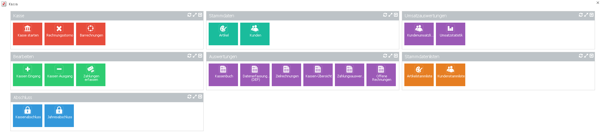
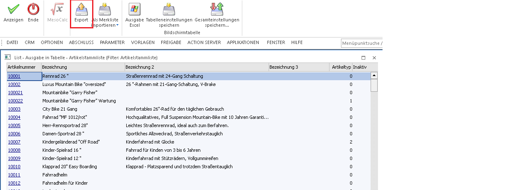
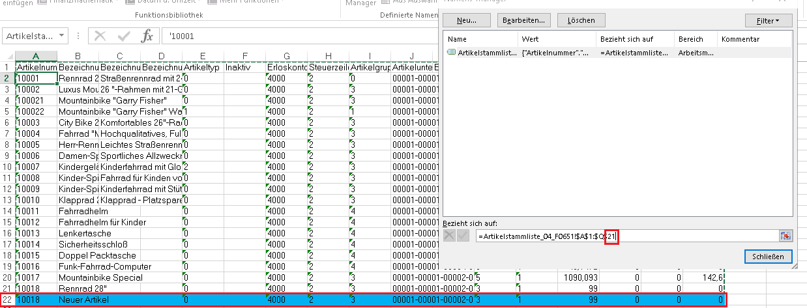
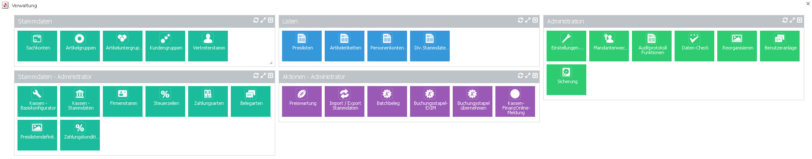

Für das Modul WinLine KASSE bzw. WinLine FAKT KASSE werden standardmäßig die Cockpits "Kasse" und "Verwaltung" zur Verfügung gestellt.
Bei einem "Kassen"-Benutzer werden dafür die Cockpits 1 und 2 verwendet, für einen "normalen" Benutzer werden die Cockpits 7 und 8 verwendet (die Zuordnung erfolgt beim Ersteinstieg).

Folgende Menüpunkte stehen für die Kasse zur Verfügung:
Ø Kasse starten
Startet das Belegerfassen in Form eines Dashboards mit einem hinterlegten Tableau.
Ø Rechnungsstorno
Hier wird der Menüpunkt Rechnungsstorno aufgerufen, welcher beim Aufruf alle heutigen Kassenbelege des aktuellen Benutzers übersichtlich darstellt.
Ø Barrechnungen
Durch Anwahl dieses Cockpiteintrags wird der Menüpunkt Barrechnungen geöffnet.
Ø Kassen Eingang
Der Menüpunkt Kassen Eingang öffnet den Menüpunkt "Kassen Ein-/Ausgang" im Reiter Kassen Eingang. Hier es ist möglich, B-Buchungen inkl. Quittung zu erstellen.
Ø Kassen Ausgang
Der Menüpunkt Kassen Ausgang öffnet den Menüpunkt "Kassen Ein-/Ausgang" im Reiter Kassen Ausgang. Hier es ist möglich, B-Buchungen inkl. Quittung zu erstellen.
Ø Zahlung erfassen
Der Menüpunkt Zahlung wird aufgerufen und es können für bereits erfasste Belege gezahlt bzw. teilgezahlt werden.
Ø Kassenabschluss
Der Menüpunkt Kassenabschluss wird aufgerufen und es ist möglich, für ein Kassenkonto den Abschluss inkl. Originalausdruck der Buchungen vom letzten Kassenabschluss bis heute durchzuführen.
Ø Jahresabschluss
Mithilfe dieses Button kann direkt ein "vereinfachter" Jahresabschluss ange
Ø Artikel
Beim Öffnen dieses Cockpit-Eintrags wird der Artikelstamm mit dem Formular "10200*Kasse" geöffnet.
Ø Kunden
Beim Öffnen dieses Cockpit-Eintrags wird der Kundenstamm mit dem Formular "10100*Kunden" geöffnet
Ø Kassenbuch
Hier öffnet sich der Menüpunkt "Kassenbuch" der Finanzbuchhaltung und es kann von dem selektiertem FIBU-Konto ein Kassenbuch ausgegeben werden.
Ø Datenerfassungsprotokoll (DEP)
Es wird die Auswertung der Barumsätze auch genannt Datenerfassungsprotokoll geöffnet. Hier können alle Barumsätze angezeigt und für den Finanzprüfer exportiert werden.
Ø Zielrechnungen
Durch Anwahl dieses Eintrags wird der Menüpunkt Rechnungs-E/A-Buch geöffnet. Mit dem Ausgangsbuch können verkaufte Artikel inkl. Steuersatz und deren Summe angezeigt werden.
Ø Kassen-Übersicht
Es öffnet sich der Menüpunkt "Kassen-Übersicht". Hier können alle Ein- bzw. Ausgänge seit dem letzten Kassenabschluss bzw. per Datumsselektion ausgegeben werden.
Ø Zahlungsauswertung
Mit diesem Cockpit-Eintrag kann eine Auswertung der Zahlungsarten ausgegeben werden.
Ø Offene Rechnungen
Beim Drücken dieses Eintrags wird eine Liste geöffnet, welche alle noch nicht komplett gezahlten Rechnungen anzeigt.
Ø Kundenumsatzliste
Hier wird eine Liste mit allen Umsätzen nach Kunden sortiert angezeigt.
Ø Umsatzstatistik
Beim Öffnen dieses Eintrags wird der Menüpunkt Kunden-, Artikelstatistik aufgerufen. Hier kann eine Statistik der Umsätze selektiert nach Kunden bzw. Artikel ausgegeben bzw. gedruckt werden.
Ø Artikelstammliste
Es wird eine Liste angezeigt mit allen angelegten Artikeln. Diese Liste kann für einen Export / Import benutzt werden. (Siehe unten)
Ø Kundenstammliste
Es wird eine Liste angezeigt mit allen angelegten Kunden. Diese Liste kann für einen Export / Import benutzt werden. (Siehe unten)
Export von Stammdaten
Mit den Stammdatenlisten "Artikelstammliste" und "Kundenstammliste" kann ein einfacher Export bzw. Import der Stammdaten erfolgen.
Wenn eine Stammliste angezeigt wird, steht der Ribbon-Button "Export" zur Verfügung.

Durch Anwahl dieses Buttons können die selektierten Zeilen der Liste als Excel Datei abgespeichert und anschließend direkt geöffnet werden.
Wenn die Datei im Excel geöffnet ist, können diese Stammdaten dann abgeändert, bzw. neue hinzugefügt werden.
Hinweis:
Wenn neue Zeilen hinzugefügt werden, muss darauf geachtet werden, dass der Bereich welcher übernommen werden soll, um die neuen Zeilen erweitern wird. Dies kann im Excel im Reiter "Formeln" mit der Option "Namens-Manager" geändert werden.

Hier muss im "Namens-Manager" die letzten Zahlen in der Formel, welche die Zeile darstellen, abgeändert werden, sodass auch die neuen Zeilen übernommen werden.
Hinweis
Falls Microsoft Excel bei der Eingabe einer Nummer z.B. ein Datumsformat erkennen sollte, so kann dies abgeändert werden, wenn vor dieser Nummer ein ' (Hochkomma) gesetzt wird.
Import von Stammdaten
Wenn die Excel Datei anschließend gespeichert wurde, kann mittels Ribbon-Button "in Stammdaten importieren" diese abgeänderten Artikel- bzw. Kundenliste direkt in den Stammdaten übernommen werden.
Verwaltung:

Das Verwaltungscockpit ist in einen für jeden zugänglichen Bereich und in einen nur für einen Administrator zugänglichen Bereich aufgeteilt.
Ø Sachkonten
Hier wird der Menüpunkt "Sachkonten" aufgerufen und es können diese verwaltet bzw. angelegt werden.
Ø Artikelgruppen
Es wird der Menüpunkt "Artikelgruppe" geöffnet und es können diese verwaltet bzw. angelegt werden.
Ø Artikeluntergruppen
Hier wird der Menüpunkt "Artikeluntergruppen" aufgerufen und es können diese verwaltet bzw. angelegt werden.
Ø Kundengruppen
Bei diesem Cockpit-Eintrag können Kundengruppen bearbeitet bzw. neu angelegt werden.
Ø Vertreterstamm
Hier können Vertreter verwaltet werden.
Ø Kassen - Basiskonfigurator
Damit gelangt man in den Menüpunkt "Kassen Tabellenzuordnung".
Ø Kassen - Stammdaten
Der Menüpunkt Kassen-Stammdaten wird geöffnet und die Einstellungen für die Kasse können vorgenommen werden.
Ø Firmenstamm
Hier können alle relevanten Firmendaten hinterlegt werden, welche auch im Rechnungsformular angedruckt werden.
Ø Steuerzeilen
Durch Anwahl dieser Option wird der Unternehmensstamm im Reiter "Steuerzeilen" geöffnet. Hier kann bei den Steuerzeilen der Steuersatz für die Kasse hinterlegt werden.
Ø Zahlungsarten
Hier können Zahlungsarten welche in das Datenerfassungsprotokoll gelangen sollen angelegt werden.
Ø Belegarten
Mit dieser Option können Belegarten verwaltet werden. Es kann die Option "Barrechnung" im Reiter "Zahlungen" hinterlegt werden.
Ø Preislistendefinition
Es wird die Preislistendefinition geöffnet. Hier kann eingestellt werden ob es sich bei Preisen in dieser Preisliste um einen Brutto- oder um einen Nettopreis handelt.
Ø Zahlungskonditionen
Hier können verschiedenen Zahlungskonditionen angelegt werden, welche anschließend bei den Kunden hinterlegt werden können.
Ø Preisliste
Hier kann eine Auswertung aller hinterlegten Preise der Artikel ausgegeben werden.
Ø Artikeletiketten
In diesem Menüpunkt können für Artikel jeweilige Artikeletiketten gedruckt werden.
Ø Personenkontenliste
Hier kann eine Auswertung aller hinterlegten Kunden bzw. Lieferanten ausgegeben werden.
Ø Div. Stammdatenlisten
Mit diesem Cockpit-Eintrag können div. Stammlisten wie z.B. Zahlungskonditionen, Belegarten, Belegkopftexte und Zahlungsarten ausgegeben werden.
Ø Preiswartung
Hier können Preise verwaltet werden und direkt für mehrere Preise übernommen werden.
Ø Import / Export Stammdaten
Beim Drücken dieses Eintrags öffnet sich der Menüpunkt Export/Import. Hier können Stammdaten mit einer Vorlage und verschiedenste Methoden Exportiert bzw. Importiert werden.
Ø Batchbeleg
In diesem Menüpunkt können Belege in die WinLine importiert/übernommen werden. (z.B.: von Fremdsystemen)
Ø Buchungsstapel-EXIM
Hier können Buchungen exportiert bzw. Importiert werden. Es ist möglich diesen Export/Import für einen Stapel oder für das ganze Journal durchzuführen.
Ø Buchungsstapel übernehmen
In diesem Menüpunkt können alle Buchungen per FAKT-Stapel gebucht/übernommen werden.
Ø Kassen-FinanzOnline-Meldungen
Mithilfe dieses Menüpunkts können alle Kassenrelevanten durchgeführt werden. Bei erfolgreicher Meldung wird eine XML-Datei erstellt, welche anschließend manuell im FinanzOnline-Portal hochgeladen und damit überprüft werden kann oder wenn die Zugangsdaten eines Kassen-WebService-Benutzers in den Mandantenstammdaten hinterlegt wurden, können diese Meldungen direkt über die WinLine an das FinanzOnlne-Portal übermittelt werden.
Ø Administration
In der Spalte Administration können verschiedenste Einstellungen, Daten-Checks bzw. Sicherungen getätigt werden
Bei CWL-Benutzern werden die mitgelieferten Cockpits automatisch auf das 8. Und 9. Cockpit vorbelegt, sofern diese noch nicht zugewiesen sind. Falls diese Cockpits dennoch verwendet werden wollen, sind diese in der Cockpit-Zuordnung in der Tabelle der Standard Cockpits als Eintrag 0-2-1 Verwaltung und 0-2-2 Kasse zu finden.
Bei Benutzern, welche unsere stand-alone Kassenlösung WinLine FAKT KASSE im Einsatz haben, sprich die Option "Kasse Benutzer", in der Benutzeranlage aktiviert haben, werden diese zwei Cockpits automatisch auf Cockpit Nr. 1 und Cockpit Nr. 2 zugewiesen.